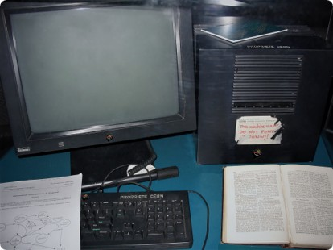

The Origins of the Web

Tim Berners-Lee proposed the World Wide Web at CERN in 1989. By the end of 1990, the first browser and web server were working. HTTP helped make communication between them possible.
Source: CERN: A Short History of the Web .
Why HTTP Changed
Early websites mainly contained simple HTML documents. As websites added images, videos, and interactive features, HTTP evolved to handle more requests efficiently. Each major version introduced improvements while keeping the basic request-and-response model.
Comparing HTTP Versions
| Version | Year | Main Improvement |
|---|---|---|
| HTTP/0.9 | 1991 | Simple GET requests and HTML responses. |
| HTTP/1.0 | 1996 | Added headers, status codes, and support for different content types. |
| HTTP/1.1 | 1997 | Made persistent connections the default and improved caching. |
| HTTP/2 | 2015 | Introduced binary framing, multiplexing, and header compression. |
| HTTP/3 | 2022 | Used QUIC to reduce delays caused by packet loss across independent streams. |
Understanding Multiplexing
Multiplexing allows multiple requests and responses to share one connection at the same time. HTTP/2 uses this approach so several resources can make progress together. However, a lost TCP packet can still delay all streams sharing that connection.
How HTTP/3 Uses QUIC
HTTP/3 uses QUIC, a transport protocol that operates over UDP. QUIC handles streams independently, so missing data in one stream does not require unrelated streams to wait for it. QUIC also integrates TLS 1.3 security into its connection setup.